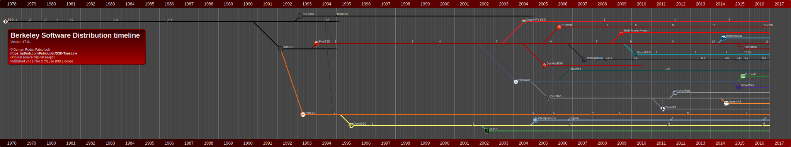
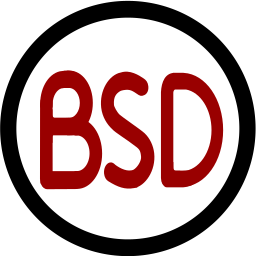
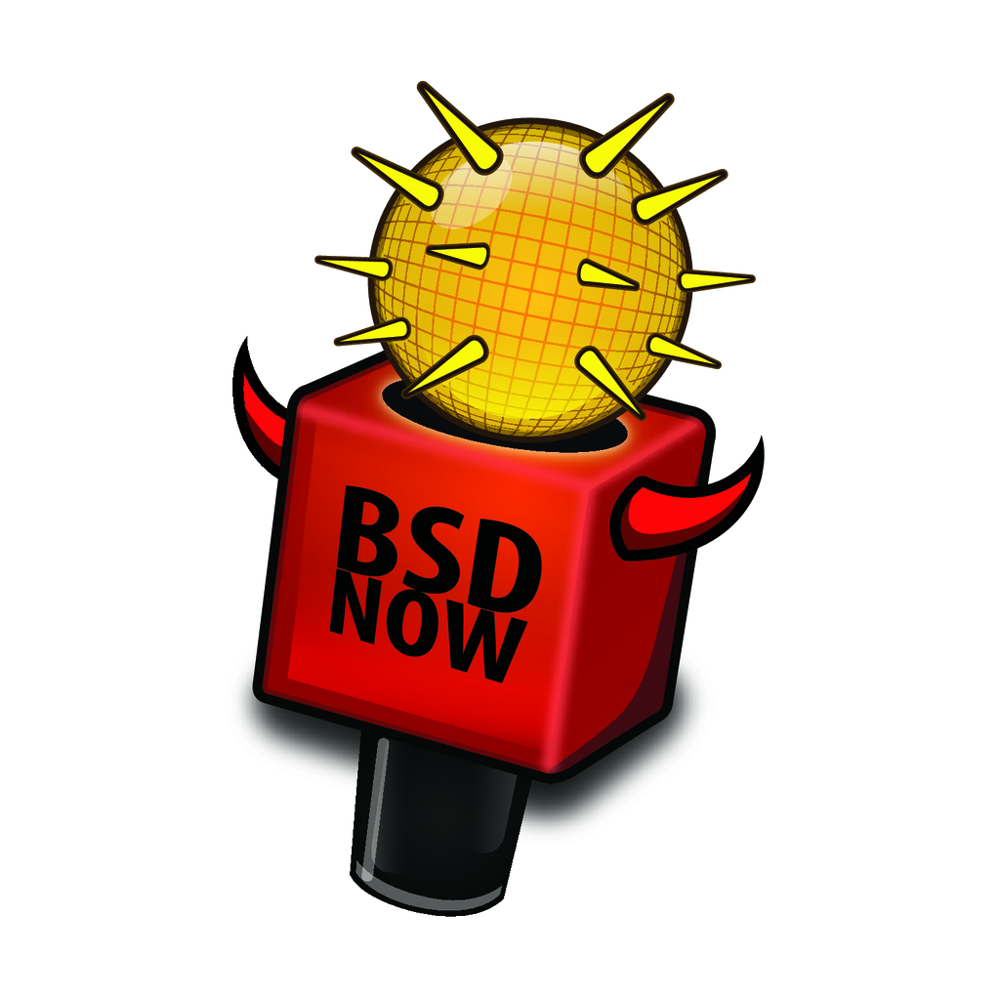
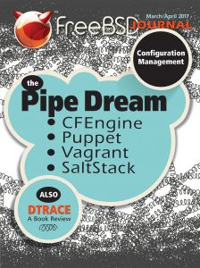
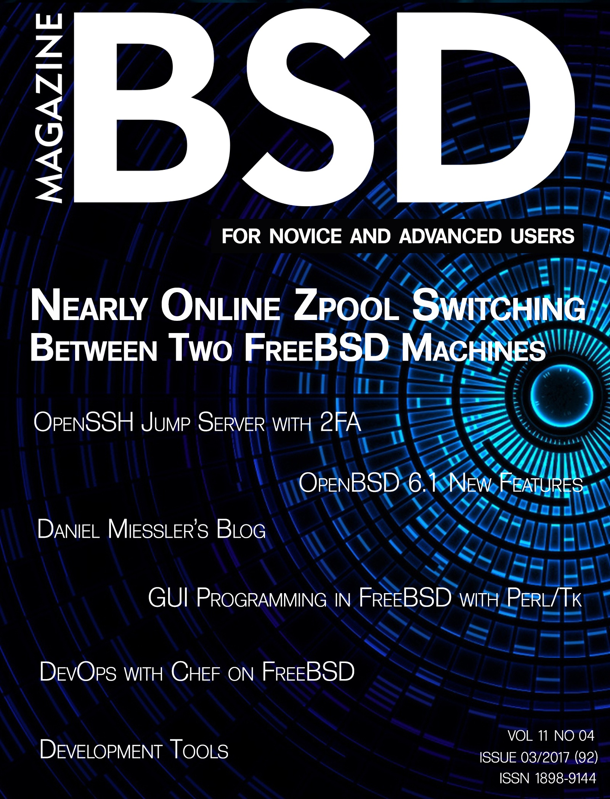
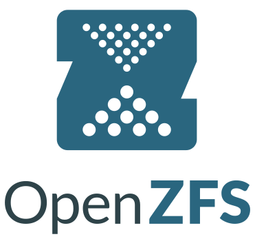

2017-05-20
Introduction

FreeBSD?
Workhorse of the internet
What is FreeBSD?
- a UNIX® like operating system
- derived from BSD (Berkeley Software Distribution)
- developed and maintained by a large community
History

![By en:User:Toresbe [CC SA 1.0 (http://creativecommons.org/licenses/sa/1.0/)], via Wikimedia Commons](https://commons.wikimedia.org/wiki/File%3APdp7-oslo-2005.jpeg){kind=link}
Genealogy

{kind=link}
History FreeBSD
Copyright (C) 2016-2017 Fabio Loli
http://futurist.se/gldt/2010/09/20/bsd-timeline-up-for-grabs/
https://github.com/FabioLolix/BSD-timeline
License
{kind=link}
Small
Copyright 1992-2017 The FreeBSD Project. All rights reserved.
Redistribution and use in source and binary forms, with or without modification, are permitted provided that the following conditions are met:
- Redistributions of source code must retain the above copyright notice, this list of conditions and the following disclaimer.
- Redistributions in binary form must reproduce the above copyright notice, this list of conditions and the following disclaimer in the documentation and/or other materials provided with the distribution.
THIS SOFTWARE IS PROVIDED BY THE AUTHOR AND CONTRIBUTORS ``AS IS'' AND ANY EXPRESS OR IMPLIED WARRANTIES, INCLUDING, BUT NOT LIMITED TO, THE IMPLIED WARRANTIES OF MERCHANTABILITY AND FITNESS FOR A PARTICULAR PURPOSE ARE DISCLAIMED. IN NO EVENT SHALL THE AUTHOR OR CONTRIBUTORS BE LIABLE FOR ANY DIRECT, INDIRECT, INCIDENTAL, SPECIAL, EXEMPLARY, OR CONSEQUENTIAL DAMAGES (INCLUDING, BUT NOT LIMITED TO, PROCUREMENT OF SUBSTITUTE GOODS OR SERVICES; LOSS OF USE, DATA, OR PROFITS; OR BUSINESS INTERRUPTION) HOWEVER CAUSED AND ON ANY THEORY OF LIABILITY, WHETHER IN CONTRACT, STRICT LIABILITY, OR TORT (INCLUDING NEGLIGENCE OR OTHERWISE) ARISING IN ANY WAY OUT OF THE USE OF THIS SOFTWARE, EVEN IF ADVISED OF THE POSSIBILITY OF SUCH DAMAGE.
The views and conclusions contained in the software and documentation are those of the authors and should not be interpreted as representing official policies, either expressed or implied, of the FreeBSD Project.
Simple
- retain or reproduce the copyright notice
- you can't sue us
Liberal
- not required to give back
- sharing still occurs
Community
Community lead
- Democratic
- Core team
- Committers
- Contributors
Conferences
- BSDCan
- AsiaBSDcon
- EuroBSDcon
- Cambridge Developer’s Summit
BSDnow.tv
FreeBSD Journal
BSD Magazine
Documentation

FreeBSD Documentation Project
man pages
- extensive
- good quality
Handbook
- 742 pages
- covers wide range of topics
Books
- 8 free books from the doc team
- numerous articles
- Michael W. Lucas
Features

Complete OS
- BSD not a distribution
- kernel and user land tools
Consistent
- ABI stability
- all binaries that run on 11.0 will run on 11.x
- across major versions the ABI can be changed
- easy administration
![[Public domain], via Wikimedia Commons](https://commons.wikimedia.org/wiki/File%3AWhite_Stars_4.svg){kind=link}
ZFS
{kind=link}
Dtrace
bhyve
- Hypervisor
Jails
- Operating system level virtualization
- Since 2000
A modified port of OpenBSD's Packet Filter
- firewall
- traffic shaping
Linux emulation
Availability

Supported architectures
- amd64, i386, ia64, pc98, powerpc, sparc64
- ARM
- Raspberry Pi 1&2
- Beaglebone White & Black
- Banana Pi, Cubieboard 1&2
- ARM64
- Rasberry Pi 3
- MIPS
- Ubiquity Networks Router-Station
- MIPS64
- Ubiquiti EdgeRouter Lite
Commercial support
Other peoples computers
Challenges
Hardware support
- wireless
- graphics